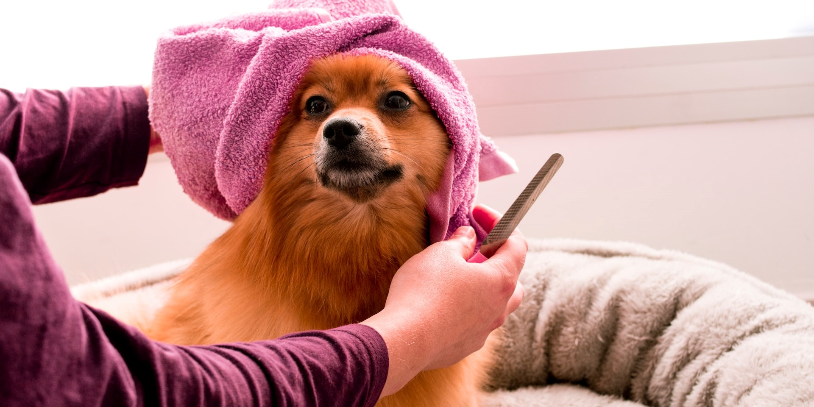
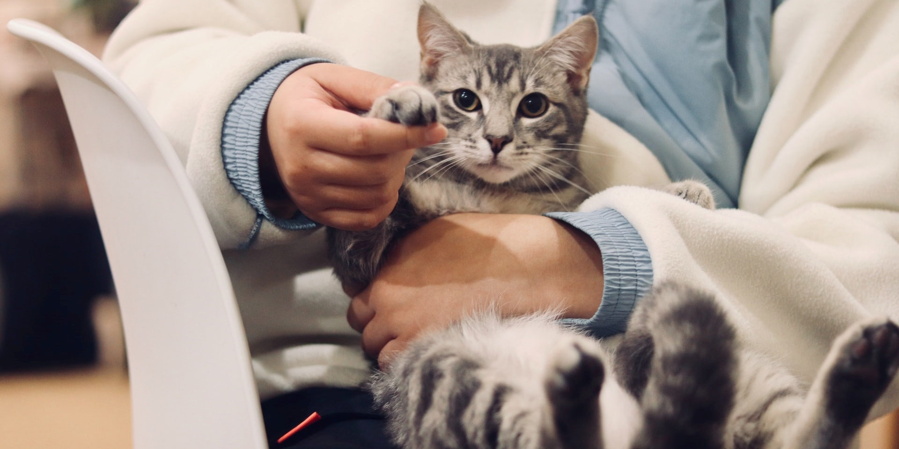
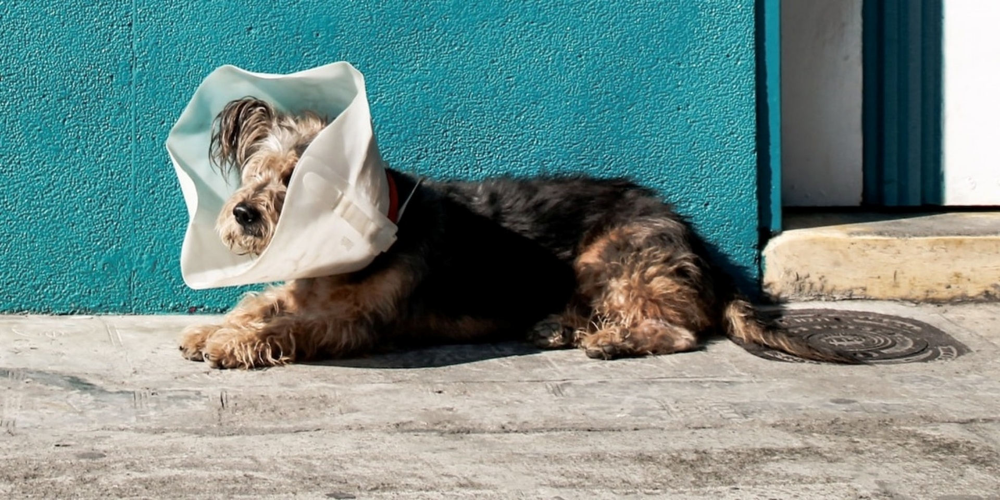
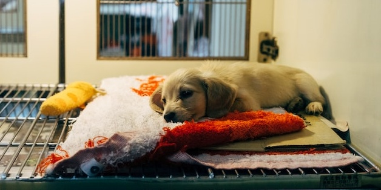

În anul 2021 a luat naștere organizația Happy Paws, o organizație non-guvernamentală ghidată exclusiv de principiul respectării și protejării animalelor. Timp de un an am reușit să găzduim, să tratăm și să îngrijim de-a lungul timpului aproximativ 300 de câini și pisici.
Preluăm animalele fără stăpân rănite, bolnave, urgențele medicale veterinare. Dorim stoparea abandonului, eutanasiei inutile, cruzimii asupra animalelor și eliberarea animalelor sălbatice, captive în condiții inumane.
Pentru creșterea gradului de conștientizare, dezvoltăm și rulăm campanii, evenimente și acțiuni, pe toată durata anului.
Fundația își asumă angajamentul de a proteja și de a asigura bunăstarea fizică și psiho - emoțională a animalelor care beneficiază de proiectele și activitățile fundației. Toți angajații, voluntarii și partenerii vor semna Codul de etică și conduită prin care se angajează să nu expună beneficiarii nici unei forme de violență și exploatare.

Acest program educativ are scopul de a răspândi concepte precum înțelegerea nevoilor animalelor, gestionarea corectă a câinilor și pisicilor, înțelegerea fenomenul câinilor fără stăpân și promovarea sterilizării. Din 2013 lucrăm în școlile primare pentru a-i învăța pe elevi să respecte animalele și să devină stăpâni responsabili ai câinilor și pisicilor lor.

În 2012 am inaugurat adăpostul pentru câinii abandonați. Capacitatea estimată este de 200 câini. Toate animalele pe care le găzduim sunt destinate să fie adoptate. În momentul de față 98% din cățeii noștri găsesc o familie adoptivă în străinătate, având în vedere că adopțiile pe plan local sunt încă foarte limitate.

Numărul enorm de câini fără stăpân pe străzi și în adăposturi, precum și lipsa unei culturi locale deschise pe tema adopției fac plasarea animalelor în străinătate să fie singura opțiune de salvare pentru multe din ele. Astfel, trimiterea animalelor în străinătate pentru adopție devine o necesitate. Animalele noastre sunt sănătoase, sterilizate și dotate de documentele prevăzute de legile UE și deplasările lor au loc în legalitate absolută

În cadrul acestui program susținem terapia și activități asistate de câini maidanezi adoptați. Beneficiarii sunt mai ales persoane defavorizate (copii cu nevoi speciale, bătrâni din centre de plasament), dar și categorii precise sau publicul larg. Echipa noastră, inclusiv un psiholog, străbat țara, alături de câinii adoptați și antrenați ai membrilor echipei, pentru a arăta oamenilor, în special copiilor, beneficiile fizice și emoționale ale includerii animalelor de companie în familie.
Andrei este inițiatorul organizației Happy Paws, care în decursul a 10 ani a implementat diverse proiecte pentru animale și a facut parteneriat cu mai multe organizații de acest gen.
Fondator
Valentina este cea care se ocupă cu familiile care vor să adopte un animal din adăpostul nostru. Pe lângă asta, ea coorodonează programele noastre educative, care au ca scop răspândirea de concepte despre animale.
Coordonator resurse umane
Mirela se ocupă de gestionarea donațiilor primite în cadrul organizației și de distribuirea lor în dependență de necesitățile animalelor, cum ar fi îngrijirile medicale mai speciale.
Coordonator finanțe
Emilia este cea care se coupă cu recrutarea și instruirea voluntarilor noștri. De asemenea, Emilia se ocupă și de organizarea unor activități ca să le mulțumească voluntarilor pentru ajutorul acordat.
Coordonator volunatri
Trimite cuvântul SPER la 8845 pentru 2$ lunar